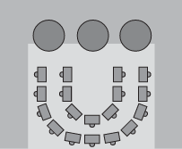
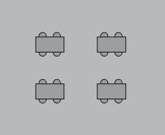
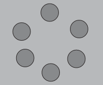

Nesta linha, a EJA representa uma promessa de efetivar um caminho de desenvolvi-mento de todas as pessoas, de todas as idades.
Nela, adolescentes, jovens, adultos e idosos poderão atualizar conhecimentos, mostrar habilidades, trocar experiências e ter acesso a novas regiões do trabalho e da cultura [...].
A EJA é uma promessa de qua-lificação de vida para todos, inclusive para os idosos, que muito têm a ensinar para as novas gerações (Cury, 2000, p. 10).
Existem diversas formas de organização da sala de aula que ultrapassam o modelo enfileirado de carteiras, porque a disposição do espaço pode impactar significativamente na dinâmica desen-volvida em sala.
DUPLAS



CÍRCULO
Outros ambientes da escola: biblioteca, refeitório, quadra...
É preciso atentar que o diálogo é muito mais que uma simples conversa.
É um princípio peda-gógico da aprendizagem.
É por meio dele que há troca de saberes, construção coletiva de conheci-mento, considerando o saber individual e do grupo.
De forma específica, os debates são uma ferra-menta interessante.
É muito importante que o professor faça essa escuta atenta dos estudantes na EJA e não tente falar por eles.
Compartilhar condições de opressão, promove a reflexão e possibilita transformação da realidade.
O binômio "denúncia-anúncio" tem a ver com a concepção de ser humano, de sujeito da história, de cidadão que denuncia e anuncia, que é capaz de "ler o mundo" não para constatar e sim para reescrevê-lo.
Ao longo da coleção, os estudantes são incentivados a desenvolver sua capacidade de inferên-cia e argumentação em textos orais e escritos em todas as áreas do conhecimento, sempre levando em consideração o perfil etário amplo do público da EJA.
A partir de textos diversificados e desa-fiadores, os estudantes são levados a realizar a observação atenta de detalhes, do contexto e das pistas implícitas presentes no texto.
O material permite que o professor sugira que os estudantes façam conexões com as informações explícitas, chegando a inferências a partir de uma análise mais profunda e crítica.